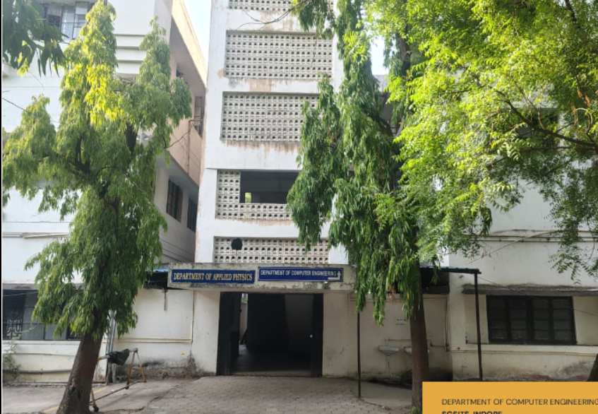

AI, data &
intelligent
systems
Research and projects that turn data into useful, responsible computing systems.
Research & PhD Scholars
Discover department supervisors, scholars, publications, projects and consultancy across systems, software, networks, data and intelligent computing.
Find a researcherResearch and projects that turn data into useful, responsible computing systems.
Resilient connected systems, secure communication and modern infrastructure.
Methods, tools and architectures for dependable real-world software.
The research ecosystem
The Research section is designed as a landing space rather than a long list of information. Each category has its own page so reports, publications, project details and other material can be added without making the main page crowded.
As the department content grows, these pages can become the home for administrator-published research information and downloadable resources.
Department facilities
Department learning extends through computing laboratories, project work, seminars and student-led technical activities on the SGSITS campus.
